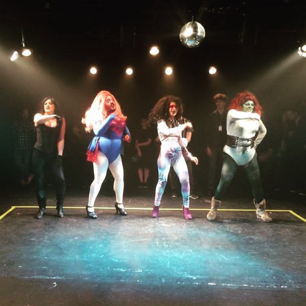
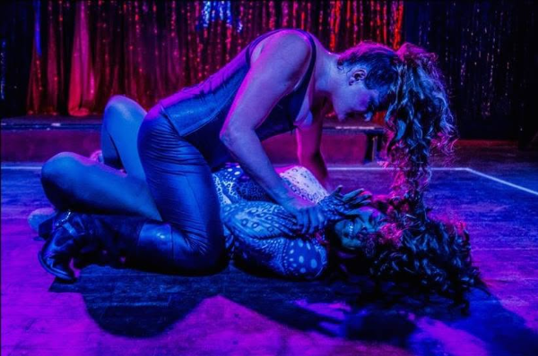
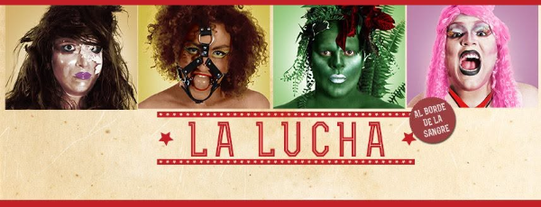

Prêmio Funarte Klauss Vianna de Dança. Criação com Leonarda Glück, Gabriel Machado e a uruguaia Lucía Náser. Orientação dramatúrgica e coreografia de Carmen Jorge. Luz de Fábia Regina. Trilha de Jo Mistinguett. Estreia na boate Il Tempo, Montevidéu, Uruguai. Em Curitiba, no Studio Grazzy Brugner — escola de pole dance —, de 11 a 14 de dezembro de 2014. Circulou por várias cidades brasileiras, chegando ao Sesc Consolação, São Paulo, em 2017. Fotografia: Persichetti.
O ponto de partida foi um documentário sobre Los Exóticos, trupe mexicana de luta livre que luta caracterizada de drag. Daí veio a vontade de fazer algo que misturasse espetáculo e competição esportiva — com um público que torce, ri, grita, entra e sai, bebe e conversa.
“A gente quer algo engraçado, dramático, violento, que possa envolver as pessoas, e que a gente também possa se surpreender fazendo.”

